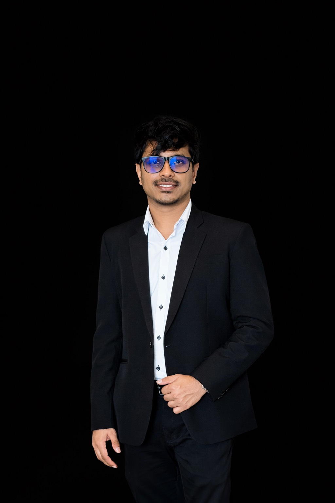

// 00 — portfolio
DATA-FOCUSED BACKEND ENGINEER
2+ years designing SQL databases, building ETL pipelines, and integrating backend data systems. Currently pursuing an MSc in Data Science & AI — focused on scalable, reliable data infrastructure.

Colombo, Sri Lanka// 01 — About
I'm a data-focused backend engineer with hands-on experience in SQL Server development, T-SQL query optimisation, ETL pipeline design, and backend data integrations. My work involves turning messy, distributed data into reliable, analytics-ready systems.
Currently deepening my foundations through an MSc in Data Science & AI at the University of Sri Jayewardenepura, with a growing focus on cloud-native data engineering.
I care about data quality, query performance, and building pipelines that the next engineer can confidently maintain.
// 02 — Experience
TECH 84 · Colombo
SunTec Information Systems · Moratuwa
// 03 — Projects
01
Designed and implemented an SFA data warehouse using SQL Server Integration Services. Built ETL workflows to consolidate sales and field activity data into analytics-ready models with dimensional schema and historical snapshots.
GitHub ↗02
Final-year personal project: fullstack car service management system with booking requests, service history, and admin dashboards. Achieved A pass for end-to-end design, implementation, and testing.
GitHub ↗03
Built an ETL pipeline using SQL Server Integration Services to extract, validate, and transform data from multiple sources into a central reporting database with data quality checks at each stage.
GitHub ↗04
Designed a normalised SQL Server schema supporting transactional and reporting workloads. Includes execution plan analysis, targeted indexing, and curated views for BI consumption.
GitHub ↗// 04 — Skills
Languages
Databases
Data Engineering
Tools & Frameworks
// 05 — Contact
Open to data engineering roles, collaborations, or just a conversation about data systems. Based in Colombo — available remotely worldwide.